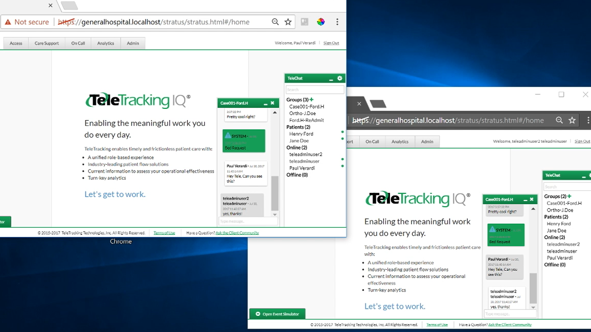

Experiences
Internship | Research | Hackathon
Software Engineer Intern At TeleTracking Technologies, Inc
Developer | May 2017 - August 2017 | Pittsburgh, PAOver the summer, we have built a web and mobile chat application with three other interns. This chat application was designed with the scenario where medical employees needed an efficient way to communicate with other employees as well as patients.
Specifically, I worked with SignalR, which was a ASP.NET library that allowed me to implement real-time operations (e.g messaging and appearing on contacts list).
Below is a screenshot of a prototype web application hosted on localhost
Programming Languages Used:
- C#
- JavaScript
- HTML
- CSS
Technologies / Frameworks Used:
- Entity Framework
- AngularJS
- ASP.NET SignalR
- Cordova
- Ionic
Research Assistant At Laboratory of Ocular Biomechanics
Developer | January 2016 - June 2016 | Pittsburgh, PAI debugged and tested java algorithms in Fiji Plugins to aid in eye research. The field of the human eye is current not well known, so Fiji plugins would be used to measure and calculate various characterisitcs of the eye. (e.g Tortuosity)
Program Language used: Java
Technology Used: Fiji Is Just Image J (Fiji) - image processing software
SteelHacks Hackathon
Febuary 2017 | Pittsburgh, PAI created a music player with two other people. The program would play musical notes on various instruments included in the javax.sound.midi library. Each of us coded a song. For my song, I coded "Faded" by Alan Walker using a computer-generated piano.
Programming Language Used: Java